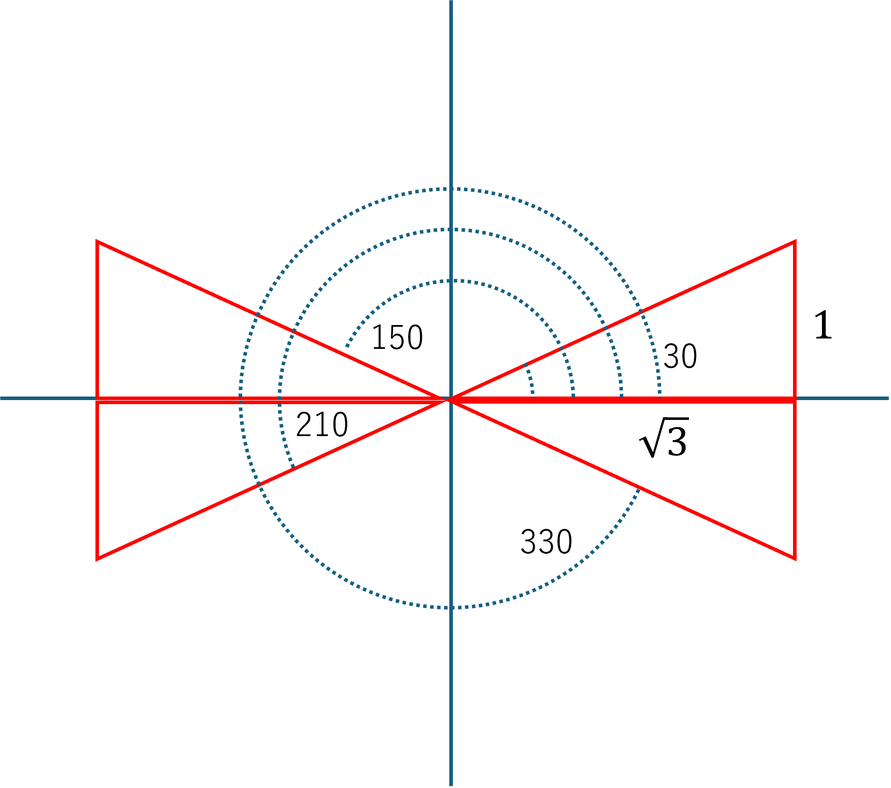

atan2，の不思議
アークタンジェント，一般的に使われる関数ですが，適応範囲が決まっています．
\( \Large \displaystyle \frac{- \pi}{2} \ \sim \ \theta \ \sim \ \frac{ \pi}{2}\)
つまり，ー９０度から９０度の範囲です．
θ＝30, 150, 210, 330度，で考えてみると，

θ(degree) |
θ(radian) |
\( \Large x : 2 \ cos \ \theta \) | \( \Large y : 2 \ sin \ \theta \) | atan(rad) | atan(degree) |
| 30 | 0.5236 | \( \sqrt{3}\) | 1 | 0.5236 | 30 |
| 150 | 2.618 | \( -\sqrt{3}\) | 1 | -0.5236 | -30 |
| 210 | 3.665 | \( -\sqrt{3}\) | -1 | 0.5236 | 30 |
| 330 | 5.760 | \( \sqrt{3}\) | -1 | -0.5236 | -30 |
この計算からわかるように，０～３６０度の計算においても，ー９０度から９０度の範囲で表示します．
そこで，登場？したのが，atan2，です．
これは，ｘ，ｙの値を指定することで，０～３６０度を計算してくれます（ラジアンですが）
θ(degree) |
θ(radian) |
\( \Large x : 2 \ cos \ \theta \) | \( \Large y : 2 \ sin \ \theta \) | atan(rad) | atan(degree) | atan2(y,x) | θ(degree) |
| 30 | 0.5236 | \( \sqrt{3}\) | 1 | 0.5236 | 30 | 0.5236 | 30 |
| 150 | 2.618 | \( -\sqrt{3}\) | 1 | -0.5236 | -30 | 2.618 | 150 |
| 210 | 3.665 | \( -\sqrt{3}\) | -1 | 0.5236 | 30 | -2.618 | -150 |
| 330 | 5.760 | \( \sqrt{3}\) | -1 | -0.5236 | -30 | -0.5236 | -30 |
第３，４象限は，マイナスの値となるので，実際には，０～３６０度，ではなく，－１８０～１８０度，ですが，まあそれほど問題ではないでしょう．
問題なのは．．．．．上の表では，
atan2(y,x)
と記したのですが，ソフトウェアによっては，異なる場合があるのです．．．．
atan2(x,y) ： エクセル，GoogleSheets, Numbers, Kyplot
atan2(y,x) ： Python, R, Labview
などです．エクセル互換性のあるソフトは，エクセルに準じているようです．
Rにおいては，
x=sqrt(3)
y=1
atan2(y,x)
atan2(x,y)
で，
> atan2(y,x) [1] 0.5235988
> atan2(x,y) [1] 1.047198
となり，ｙ，ｘ，の順番であることがわかります．
Python(Google Colab)においては，
import math
x=math.sqrt(3)
y=1
xy=math.atan2(x,y)
yx=math.atan2(y,x)
print(yx)
print(xy)
で，
0.5235987755982989
1.0471975511965976
となり，ｙ，ｘ，の順番であることがわかります．
なぜこんな混乱があるかは，よく知りませんが，それぞれのソフトに適した使い方をしていかなくてはならないですね．
Copilot，に聞いてみると，
atan2(x,y) ： ベクトル (x, y) をそのまま渡したい文化
atan2(y,x) ： 数学の y/x に従った標準的定義
さらには，古いFORTRAN，等による歴史的理由があるようです．
使う方から考えると，統一してもらいたいところです．